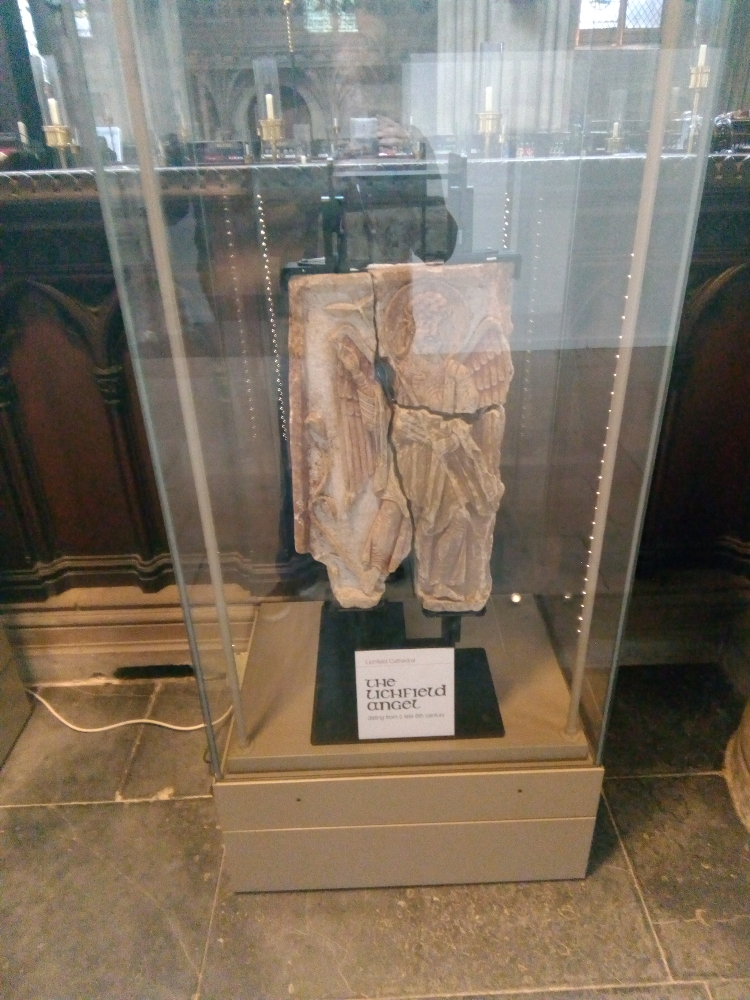
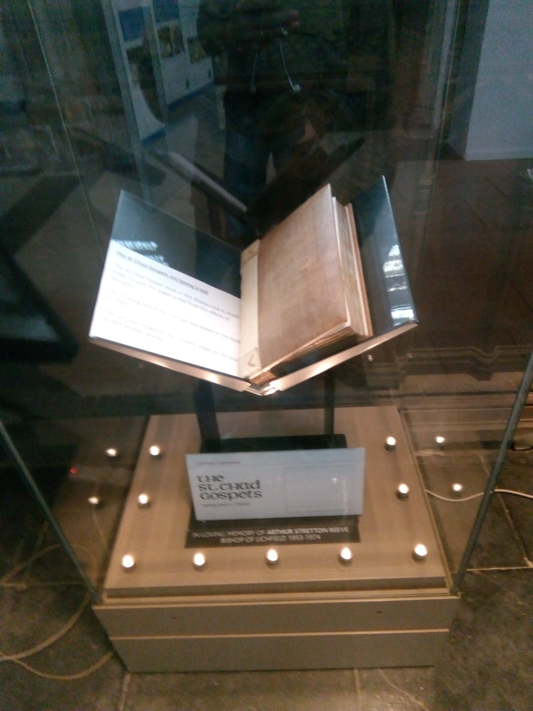

History
Lichfield Angel
The Lichfield Angel was discovered in the summer of 2003 and has been dated to around the year 800AD and is an absolutely remarkable display of Anglo Saxon sculpturing. The sculpture is comprised of three seperate fragments which are believed to form the corner of a shrine chest possible to St Chad himself. The sculpture was discovered under the nave of the cathedral in the summer of 2003 prior to when the cathedral was having a retractable stage installed, the knowladge regarding the archeoldgy of the nave was limited although it was believed that the old Anglo Saxon church was somwhere west of church of St Mary so when the Sculpture was discovered it was a remarkable find and also uncovered the location of the Anglo Saxon church which was previouly lost through history.
St Chads Gospel
St Chads Gospel is an 8th Century gospel book which can be currently foud in the cathedrals chapter house. Other names that it has been reffered to by include The Lichfield Gospels and The St Teilo Gospels. There are currently 236 surviving folios that have survived the ages and eight are even alluminated, four more even contain framed text. The manuscript has been rebound three time throughout its history once in 1707 where the pages were known to have been trimmed during the binding process, in 1862 it was rebound again and during the binding this time the manuscript were cut into single leaves. The last time it was rebound was in 1962 by Roger Powell who thankfully did not further more alter the manuscript in any way during the buinding process.
Herkenrode Glass
The famous Herkenrode Glass is not just consided a tresure of the cathedral but of the whole of the European continent as well. It was installed in Lichfield Cathedral in the year of 1803 when it was rescued from the destruction caused by the Napoleonic wars. It withstood centuries of weather and pollution however in 2010 it was in a dire state so it was taken to Barley Studio where it's five year restoration project would commence. In the month of March in 2015 Lichfield Cathedral welcomed HRH the Duke of Gloucester to a special event to mark the completion of the successful restoration project.